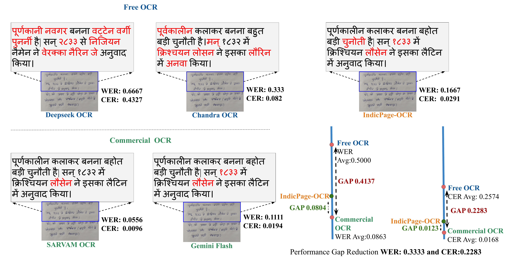
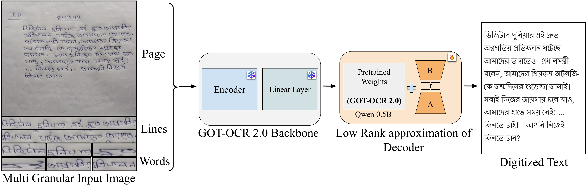
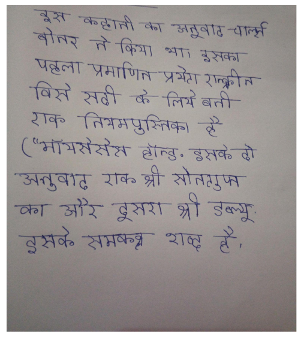
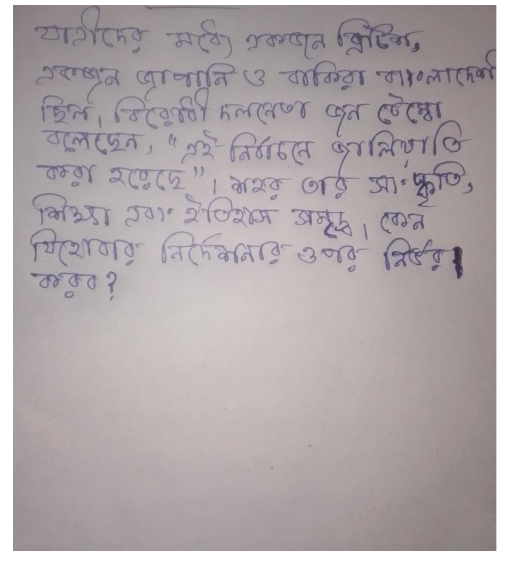
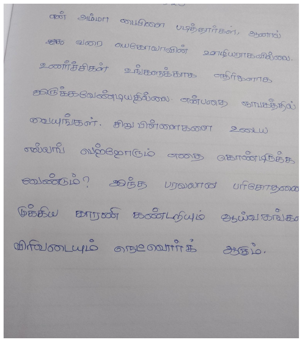
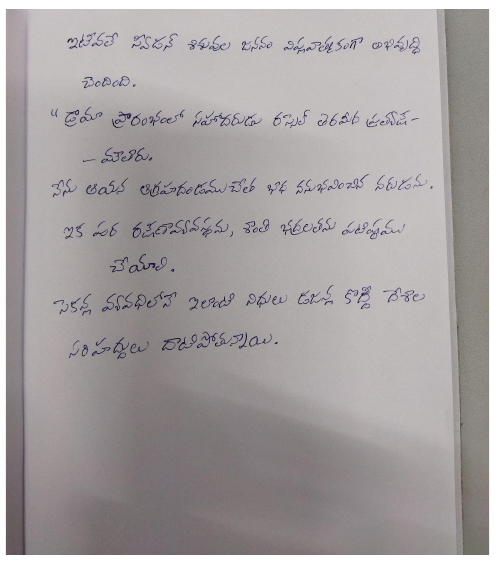

IndicPage-OCR: Adapting Vision-Language Models for Multilingual Handwritten Page Recognition
A document OCR system for handwritten Indic-language pages, designed to reduce the recognition gap between open OCR systems and commercial OCR services.
Overview
Handwritten page OCR in Indian languages remains difficult because pages contain diverse scripts, dense line layouts, writer-specific character shapes, and real-world scanning artifacts. IndicPage-OCR adapts a vision-language OCR backbone for full-page handwritten recognition and evaluates it across Bengali, Hindi, Tamil, and Telugu examples against strong open and commercial baselines.

Key Contributions
- Full-page handwritten OCR: IndicPage-OCR targets complete handwritten page images instead of isolated words or small text crops.
- Multigranular visual input: The pipeline combines page-level, line-level, and word-level evidence before decoding text.
- Parameter-efficient adaptation: The method adapts a GOT-OCR 2.0 style vision-language backbone with a low-rank decoder update.
- Broad qualitative evaluation: The project page includes Bengali, Hindi, Tamil, and Telugu result panels with links to input, ground truth, and baseline outputs.
Method

Model Adaptation
The visual page is represented at multiple granularities so the decoder can preserve both local handwriting cues and global reading order.
The adaptation strategy keeps the pretrained backbone central while adding a lightweight low-rank update to specialize the decoder for handwritten Indic pages.
Open Pipeline PDFTeaser Metrics
The local teaser figure reports average WER and CER for free OCR, commercial OCR, and IndicPage-OCR. The table below mirrors those headline values for quick scanning.
| System Group | WER Avg. | CER Avg. | Note |
|---|---|---|---|
| Free OCR | 0.5000 | 0.2574 | Open/free OCR baseline average from teaser |
| Commercial OCR | 0.0863 | 0.0168 | Commercial OCR reference average from teaser |
| IndicPage-OCR | Gap reduced by 0.3333 | Gap reduced by 0.2283 | Reported performance gap reduction from teaser |
Qualitative Results
Each language keeps the input page fixed while the model output panel cycles automatically every 3 seconds. Use the arrows or dots to inspect a specific model output.




Citation
Citation details can be updated after the official proceedings metadata is available.
@inproceedings{bhattacharya2026indicpageocr,
title = {IndicPage-OCR: Adapting Vision-Language Models for Multilingual Handwritten Page Recognition},
author = {Bhattacharya, Shaon and Mondal, Ajoy and Jawahar, C. V.},
booktitle = {Proceedings of the 17th IAPR International Workshop on Document Analysis Systems (DAS)},
year = {2026},
note = {Accepted paper}
}